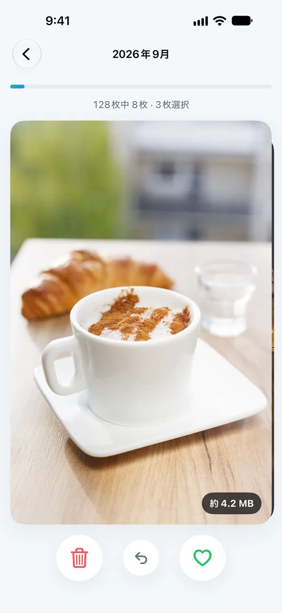
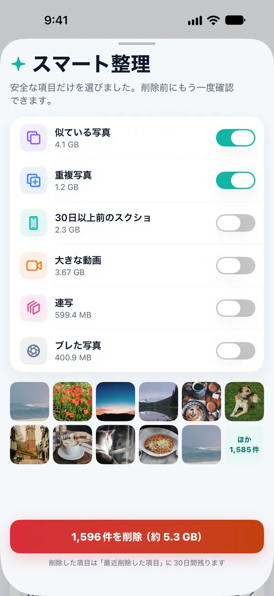
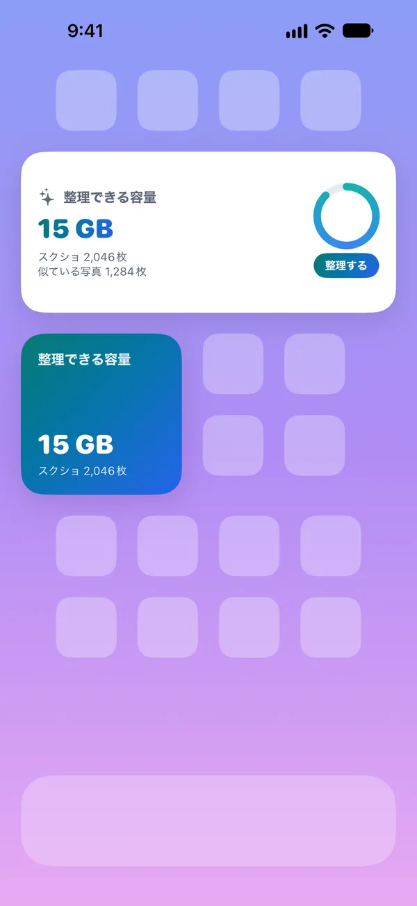
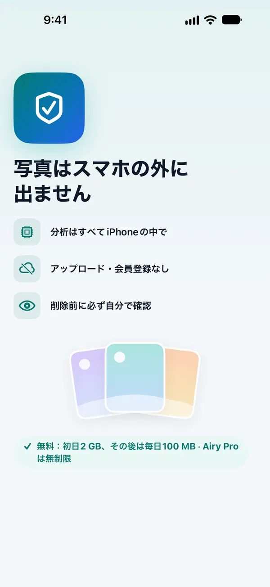

iPhoneの容量、
写真から空けよう
似ている写真、大きな動画、たまったスクリーンショットを見つけてお見せします。何を削除するかはいつも自分で選べて、写真がiPhoneの外に出ることはありません。
連写やほぼ同じ写真をまとめる
大きい順にひと目で
古いものから整理
受け取った写真をまとめて表示
おすすめはAiryが、
選ぶのはあなた
数秒のうちに続けて撮ったほぼ同じ写真をまとめて、一番くっきりした1枚をおすすめします。気に入らなければ、別の写真を残せばOKです。
- グループごとに「ベストだけ残す」ボタンで整理
- お気に入りと保護したアルバムの写真は候補から除外

スワイプするだけで
整理完了
月ごとに写真を1枚ずつ見ながら、左で削除、右で残す。間違えても、すぐに取り消せます。
- 写真ごとの容量を表示
- 途中でやめても、続きから再開
選んだものだけ、
もう一度確認
安全な項目だけを選んで一覧にします。オン・オフで決めたら、削除の前にもう一度確認して、最後にiOSの確認画面で承認します。
- 削除した写真は「最近削除した項目」に30日間保管
- 3秒以内なら取り消し可能


整理できる容量を
ホーム画面ですぐ確認
整理できる容量をウィジェットで確認して、必要なときにすぐ開けます。コントロールセンターとショートカットにも対応しています。
3ステップで完了
写真へのアクセスを許可
分析はすべてiPhoneの中で行います。最初の1回は、ひと通り確認するのに少し時間がかかります。
おすすめを確認
似ている写真、大きな動画、古いスクリーンショットをカテゴリ別に表示します。
自分で選んで整理
残すものと削除するものを選び、iOSの確認画面で承認すれば完了です。
写真はスマホの外に
出ません
Airyにはサーバーがありません。写真をアップロードせず、アカウントも作らず、広告や追跡ツールも入れていません。
AppleのVisionを使って、iPhoneの中で比較します。
App Storeのプライバシーラベル：「データの収集なし」。
Airyが勝手に削除することはありません。
削除した写真は「最近削除した項目」に30日間残ります。

無料ではじめて、
必要なときだけPro
初日は2GBまで、その後は毎日100MBまで無料で整理できます。
無料
- すべての機能を試せる
- スワイプ・似ている写真の整理
- ウィジェット
Airy Pro 年間
- 容量の上限なしで整理
- すべてのカテゴリ・スマート整理
- いつでも解約可能
Airy Pro 買い切り
- Proの機能をずっと利用
- 更新料金なし
サブスクリプションは、期間終了の24時間前までに解約しない限り自動更新されます。解約は「設定」›「ユーザ名」›「サブスクリプション」から行えます。アプリ内では週間プラン（¥600）も選べます。価格は国によって異なる場合があります。
気になること
削除したのに、空き容量がすぐに増えません。
iOSは削除した写真を「最近削除した項目」に30日間保管します。すぐに空き容量を増やすには、写真アプリ › アルバム › 最近削除した項目で削除してください。
Airyが勝手に写真を削除することはありますか？
いいえ。削除するには必ず、「削除前の確認」画面でのチェック、3秒間の取り消し、iOSの確認画面での承認を経る必要があります。ウィジェットとショートカットは画面を開くだけで、何も削除しません。
写真はサーバーに送信されますか？
いいえ。Airyにはサーバーがありません。比較も分析も、すべてiPhoneの中で行われます。
iCloud写真を使っています。
iCloud写真がオンの場合、iPhoneで削除した写真は、同じAppleアカウントの他のデバイスからも削除されます。初めて整理するときに、アプリでもあらためてお知らせします。
無料で使える容量はどう計算されますか？
初めて整理する日は2GBまで、翌日からは毎日100MBまで無料です。0時にリセットされます。
サブスクリプションはどうやって解約しますか？
「設定」›「ユーザ名」›「サブスクリプション」›「Airy」から解約できます。無料トライアル中に解約すれば、料金は請求されません。
軽やかに、Airy
まもなくApp Storeで公開します。